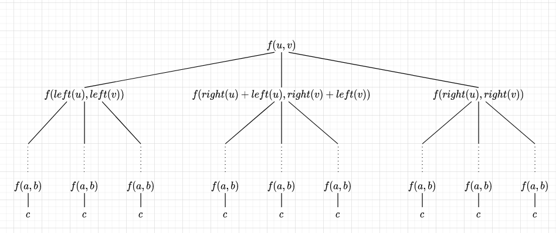

Algorítmo de Karatsuba para multiplicação
Durante muito foi pensado que a complexidade mínima que poderia ser conseguida a partir da multiplicação de dois numeros de n termos era de O(n²), porém Anatolii Alexeievich Karatsuba descobriu em uma semana de pesquisa um algorítmo de complexidade menor que este, o algorítmo de Karatsuba.
Introdução
Entre as aplicações mais comuns do método de Karatsuba está o seu uso na criptografia na criação de chaves criptográficas, já que esse algoritmo em específico é muito mais eficiente na multiplicação de numeros de muitos dígitos do que o método original de multiplicação.
O Método Clássico
No método normal de multiplicação, por exemplo quando se multiplica os numeros \(ab\) por \(cd\), se simplificarmos a operação em multiplicações de um dígito e adição, temos que a resolução de \(ab \cdot cd = ac \cdot 10^2 + (bc + ad) \cdot 10^1 + bd\), ou seja, no algorítmo, o numero de multiplicações individuais feitas é igual a \(n^2\).
Como emeplo, se tivermos \(A = 1234\) e \(B = 3456\), teríamos que:
O Método de Karatsuba
No método normal de Karatsuba, é abordado o problema da multiplicação usando um método de divisão e conquista, onde ele, em primeira instância, separa cada digitos em duas partes: \(A_0\), \(A_1\), \(B_0\) e \(B_1\), sendo que cada parte possui \(n/2\) do tamanho original.
Usando o mesmo A e B do método clássico, teríamos:
\[A_0 = 12, A_1 = 34, B_0 = 34, B_1 = 56\]
Bseando-se nessa separação, Anatolii chegou em uma relação de \(A_0\) e \(A_1\) tal que:
\[A = A_0 \cdot 10^{n/2} + A_1\]
onde o mesmo serve para \(B_0\) e \(B_1\):
\[B = B_0 \cdot 10^{n/2} + B_1\]
Usando o nosso exemplo acima, podemos mostrar então que:
\[12 \cdot 10^2 + 34 = 1234\] \[34 \cdot 10^2 + 56 = 3456\]
Podemos, assim, escrever:
\[A \cdot B = (A_0 \cdot 10^{n/2} + A_1) \cdot (B_0 \cdot 10^{n/2} + B_1)\]
expandindo a equação, chegamos em:
\[A \cdot B = A_0 B_0 \cdot 10^n + (A_0 B_1 + A_1 B_0) \cdot 10^{n/2} + A_1 B_1\]
e é nesse momento que o método de Karatsuba se destaca do modelo clássico. Como é possível observar, nesse ponto temos 4 multiplicações: \(A_0 B_0\), \(A_0 B_1\), \(A_1 B_0\) e \(A_1 B_1\), porém, fazendo uma pequena manipulação matemática, é possível escrever \((A_0 B_1 + A_1 B_0)\) como \((A_0 + A_1)(B_0 + B_1) - A_0 B_0 - A_1 B_1\), consegue ver como? Leve um tempo para descobrir antes de continuar.
continuar ou terminar
O fato a ser ponderado é que \((A_0 + A_1)(B_0 + B_1) = A_0 B_1 + A_1 B_0 + A_0 B_0 + A_1 B_1\). Isso fez com que fosse possível resolver uma multiplicação fazendo apenas 3 operações de multiplicação: \(A_0 B_0, A_1 B_1\) e \((A_0 + A_1)(B_0 + B_1)\), e não 4 como no método clássico, o que reduz o consumo computacional e a complexidade do algoritmo.
No fim, a multiplicação de dois numeros pode ser escrita por:
\[ A \cdot B = A_0 B_0 \cdot 10^n + ((A_0 + A_1)(B_0 + B_1) - A_0 B_0 - A_1 B_1) \cdot 10^{n/2} + A_1 B_1 \]
Questão 1
Resolva o exemplo dado com \(A = 1234\) e \(B = 3456\) usando o método de Karatsuba e confira se o resultado bate na calculadora
continuar ou terminar
Questão 2
Escreva um Pseudocódigo recursivo que resolva esse problema
A base desse algorítmo seria n ser menor a um n0, já que nesse caso a multiplicação normal seria mais eficiente.
continuar ou terminar
Para o Pseudocódigo, você deve ter chegado em algo parecido com isso:
karatsuba(A, B)
if (A < n0) or (B < n0)
return A × B
m1 = size(A)
m2 = size(B)
A0, A1 = divide(A, m2)
B0, B1 = divide(B, m2)
z0 = karatsuba(A1, B1)
z1 = karatsuba((A0 + A1), (B0 + B1))
z2 = karatsuba(A0, B0)
return (z2 × 10^m2 + ((z1 - z2 - z0) × 10^(m2/2)) + z0continuar ou terminar
Nível de Complexidade
Para definir o nível de complexidade, podemos construir a árvore baseado no pseudocódigo:

Nessa árvore:
Left é uma função que retorna o numero formado pelos elementos do meio do numero indicado até o digito de maior significância do numero (Ex: \(left(ijkl) = ij\));
Right é uma função que retorna o numero formado pelos elementos do meio do numero indicado até o digito de menor significância do numero (Ex: \(right(ijkl) = kl\));
a e b são quaisquer numeros de 1 digito.
Assim, supondo que o numero de digitos de u e v são potências de 2, temos que a altura \(h\) é: \(h = log_2n + 1\);
Também temos que o numero de operações serão: \(nOp = 3^{log_2n+1}\);
Assim, fazendo algumas manipulações matemáticas temos:
\[ nOp = 3 \cdot 3^{log_2n} \] \[ nOp = 3 \cdot 3^{log_3n/log_32} \] \[ nOp = 3 \cdot n^{1/log_23} \] \[ nOp = 3 \cdot n^{log_32} \]
Assim, temos que a complexidade do algorismo é \( O(n^{log_32}) \)